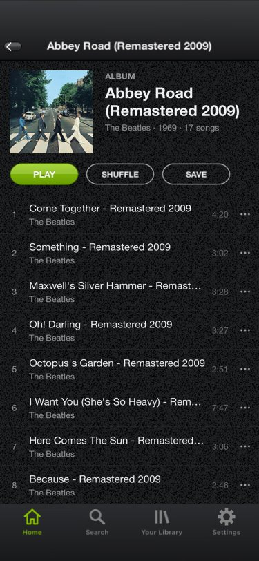
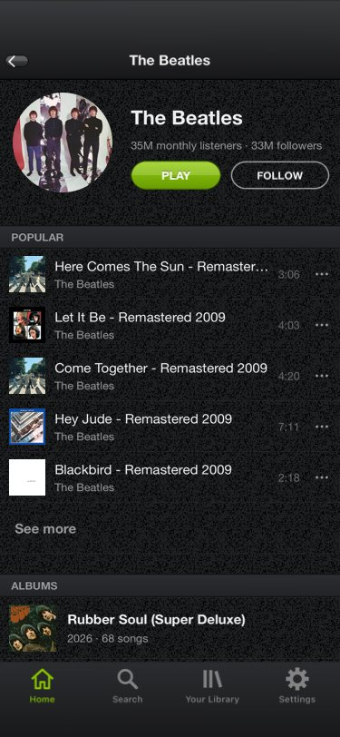
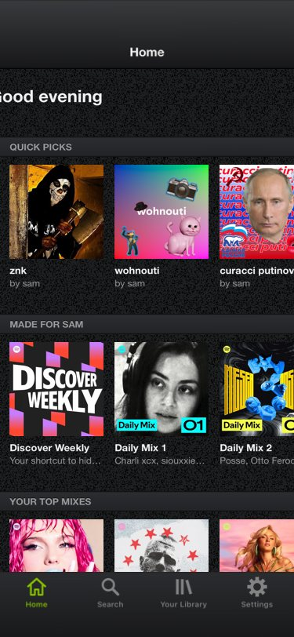
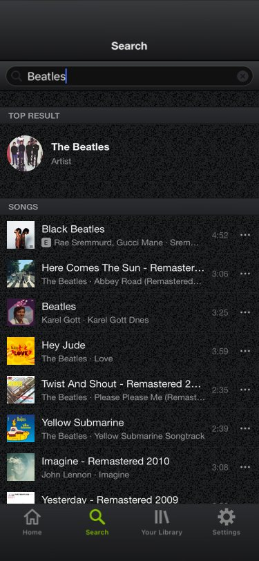

Spotify: your music, playlists and lyrics, Spotify Connect
An unofficial Spotify client with classic graphite panels and glossy bars. Sign in with a device code at spotify.com/pair or through Spotify Connect, then play and download music directly on the device. Spotify Premium is required.




Unofficial apps by samcejko, not affiliated with or endorsed by Twitch, Google, Apple, TikTok, Instagram, Meta, Spotify, Kick, NVIDIA, Mojang, Microsoft, OpenRouter, Vine, X, diVine or the Moonlight, Sunshine and Apollo projects.